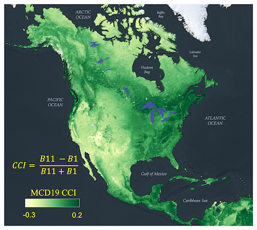
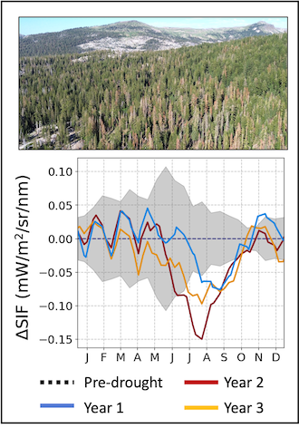
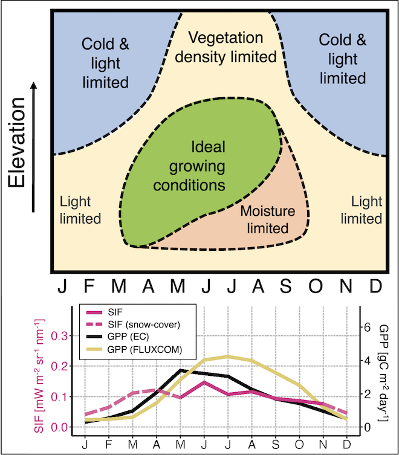
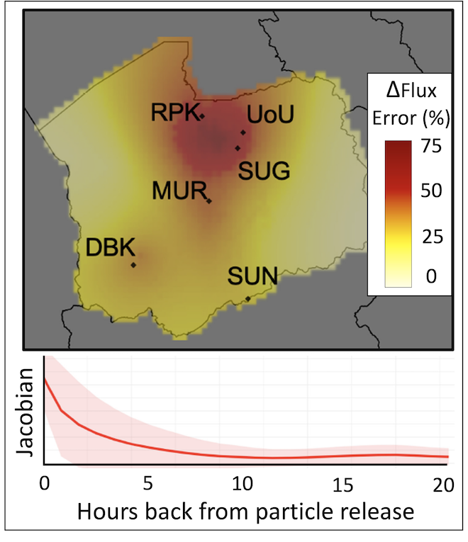

Current and Past Projects
Mapping Chlorophyll and Carotenoid pigment dynamics across North America using MODIS MAIAC data
This goal of this project is to examine whether satellite observations of photoprotective pigments can improve monitoring of drought stress and mortality risk in western US forests. We are developing and validating a new dataset of the Chlorophyll-Carotenoid Index (CCI) from MODIS satellite data and evaluating its ability to track forest photosynthetic responses to water stress. The work investigates how CCI compares to existing vegetation indices for detecting drought-induced physiological changes and whether it can provide early warning signals for insect-induced tree mortality in evergreen conifer forests. A gridded dataset over North America (Canada, United States, Mexico) and accompanying manuscript are in preparation.


Impacts of wildfire and bark beetle mortality on forest carbon uptake
This work investigated whether satellite observations of solar-induced chlorophyll fluorescence (SIF), a remote sensing proxy for plant photosynthesis, can effectively detect and characterize tree mortality from wildfires and bark beetle outbreaks in western US forests. By comparing SIF responses across different disturbance types and severity levels, we found significant negative SIF anomalies up to 2-3 years prior to the onset of visible bark beetle mortality. We also found a strong agreement between the magnitude of annual SIF decline and the severity of vegetation loss due to wildfire.https://doi.org/10.1016/j.rse.2026.115550
Connecting satellite measurements of Solar-induced Chlorophyll Fluorescence (SIF) to photosynthesis in montane conifer forests
We looked at whether high-resolution satellite observations of solar-induced fluorescence (SIF) can effectively track photosynthesis patterns across complex mountain terrain in California's Sierra Nevada. We evaluated SIF against gross primary productivity (GPP) estimates from eddy covariance towers, machine-learning models, and land surface models across a 3000-meter elevation gradient. We showed that SIF can serve as a useful tool for carbon monitoring in montane evergreen conifer forests where traditional vegetation indices may not accurately capture photosynthetic activity. This work was published in Environmental Research Letters. https://doi.org/10.1088/1748-9326/ad07b4


Bayesian inverse modeling of urban CO2 emissions
We developed and tested a Bayesian inverse modeling framework to estimate urban CO2 emissions via an Observing System Simulation Experiment (OSSE) over Salt Lake City, Utah. This study explored how different ways of representing spatiotemporal uncertainties in the a priori emissions and in the observation-transport representation affect the model's ability to recover known emissions patterns. We also examined how individual monitoring sites within an urban network contribute to constraining emissions, including how nearby point sources can introduce biases into domain-wide estimates. This study was published in Elementa: Science of the Anthropocene. https://doi.org/10.1525/elementa.375
Bayesian inverse modeling tutorial & code in R
I worked with folks at NOAA's Global Monitoring Division to develop instructional materials and R scripts for running Bayesian inversions of atmospheric tracers (CO2, CH4, N2O, etc). See the code here: https://github.com/lkunik/bayesian-inversion-R
Publications
Yang, J.C., Bowling, D.R., Smith, K.R., Kunik, L., Raczka, B., Anderegg, W.R.L., Bahn, M., Blanken, P., Richardson, A.D., Burns, S.P., Bohrer, G., Desai, A.R., Altaf Arain, M., Staebler, R.M., Ouimette, P.A., Munger, J.W. and Litvak, M.E., 2024. Forest carbon uptake as influenced by snowpack and length of photosynthesis season in seasonally snow-covered forests of North America. Agric For Meteorol, 353, 110054. DOI: https://doi.org/10.1016/j.agrformet.2024.110054
Kunik, L., Bowling, D.R., Raczka, B., Frankenberg, C., Köhler, P., Cheng, R., Smith, K.R., Goulden, M., Jung, M. and Lin, J.C., 2023. Satellite-based solar-induced fluorescence tracks seasonal and elevational patterns of photosynthesis in California's Sierra Nevada mountains. Environ Res Lett, 19(1), 014008. DOI: http://doi.org/10.1088/1748-9326/ad07b4
Mallia, D.V., Mitchell, L.E., Gonzalez Vidal, A.E., Wu, D., Kunik, L., and Lin, J.C. 2023. Can We Detect Urban-Scale CO2 Emission Changes Within Medium-Sized Cities? J Geophys Res Atmos, 128, e2023JD038686. https://doi.org/10.1029/2023JD038686
Mallia, D.V., Mitchell, L.E., Kunik, L., Fasoli, B., Bares, R., Gurney, K., Mendoza, D., and Lin, J.C. 2020. Constraining urban CO2 emissions using mobile observations from a light-rail public transit platform, Environ Sci Technol, 54(24), p15613-15621. DOI: http://doi.org/10.1021/acs.est.0c04388
Kunik, L., Mallia, D.V., Gurney, K.R., Mendoza, D.L., Oda, T. and Lin, J.C., 2019. Bayesian inverse estimation of urban CO2 emissions: Results from a synthetic data simulation over Salt Lake City, UT. Elem Sci Anth, 7(1), p.36. DOI: http://doi.org/10.1525/elementa.375